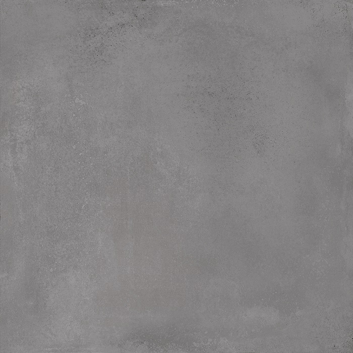

Серый керамогранит в наличии в Санкт-Петербурге
Подборка 43 позиций категории «серый керамогранит»: реальные товары из складского каталога с размерами, производителями, сортами и артикулами. Оттенки объединены в общий цвет по названию товара.
43 позицийСуммарный остаток: 56 605 м²6 форматов
Производители в подборке: Kerama Marazzi, М-Квадрат, Квадро Декор, Unitile (г. Шахты). Остатки по складскому каталогу на 1 октября 2026 года; уточните наличие и цену перед заказом.
Серый керамогранит в наличии

Мирабо Серый Обрезной600 × 600 × 9 мм, Kerama Marazzi, 1 сортВ наличии 7 848 м²Артикул: DD638520R980 ₽/м² Керамогранит технический Соль-Перец Серый Матовая300 × 300 × 7 мм, Квадро ДекорВ наличии 4 912 м²610 ₽/м²
Керамогранит технический Соль-Перец Серый Матовая300 × 300 × 7 мм, Квадро ДекорВ наличии 4 912 м²610 ₽/м² Toronto Betton Grey450 × 450 × 8 мм, М-Квадрат, ГОСТВ наличии 4 841 м²Артикул: 737299650 ₽/м²
Toronto Betton Grey450 × 450 × 8 мм, М-Квадрат, ГОСТВ наличии 4 841 м²Артикул: 737299650 ₽/м² Мирабо Серый Тёмный Матовый Обрезной600 × 1200 × 9 мм, Kerama Marazzi, 1 сортВ наличии 3 342 м²980 ₽/м²
Мирабо Серый Тёмный Матовый Обрезной600 × 1200 × 9 мм, Kerama Marazzi, 1 сортВ наличии 3 342 м²980 ₽/м² Терраццо Серый600 × 600 × 10 мм, М-Квадрат, ГОСТВ наличии 3 126 м²Артикул: NR0136960 ₽/м²
Терраццо Серый600 × 600 × 10 мм, М-Квадрат, ГОСТВ наличии 3 126 м²Артикул: NR0136960 ₽/м² Каньон Серый Светлый450 × 450 × 8 мм, М-Квадрат, ГОСТВ наличии 3 126 м²Артикул: 732071650 ₽/м²
Каньон Серый Светлый450 × 450 × 8 мм, М-Квадрат, ГОСТВ наличии 3 126 м²Артикул: 732071650 ₽/м² Sanar Серый600 × 600 × 10 мм, М-Квадрат, ГОСТВ наличии 2 794 м²Артикул: NR0377960 ₽/м²
Sanar Серый600 × 600 × 10 мм, М-Квадрат, ГОСТВ наличии 2 794 м²Артикул: NR0377960 ₽/м² DACITE BASE GREY600 × 600 × 9,5 мм, производство: КазахстанВ наличии 2 633 м²980 ₽/м²
DACITE BASE GREY600 × 600 × 9,5 мм, производство: КазахстанВ наличии 2 633 м²980 ₽/м² Hornito Silver Серый450 × 450 × 8 мм, М-Квадрат, ГОСТВ наличии 2 626 м²Артикул: 737185650 ₽/м²
Hornito Silver Серый450 × 450 × 8 мм, М-Квадрат, ГОСТВ наличии 2 626 м²Артикул: 737185650 ₽/м² SILENT GREY600 × 600 × 9,5 мм, производство: КазахстанВ наличии 2 345 м²980 ₽/м²
SILENT GREY600 × 600 × 9,5 мм, производство: КазахстанВ наличии 2 345 м²980 ₽/м² Прожетто Серый Светлый600 × 600 × 10 мм, М-Квадрат, ГОСТВ наличии 1 751 м²Артикул: NR0025960 ₽/м²
Прожетто Серый Светлый600 × 600 × 10 мм, М-Квадрат, ГОСТВ наличии 1 751 м²Артикул: NR0025960 ₽/м² NEO Серый400 × 400 × 7 мм, Unitile (г. Шахты), СтандартВ наличии 1 731 м²Артикул: NEO900 ₽/м²
NEO Серый400 × 400 × 7 мм, Unitile (г. Шахты), СтандартВ наличии 1 731 м²Артикул: NEO900 ₽/м² Мирабо Серый Тёмный Обрезной600 × 600 × 9 мм, Kerama Marazzi, 1 сортВ наличии 1 421 м²Артикул: DD638620R980 ₽/м²
Мирабо Серый Тёмный Обрезной600 × 600 × 9 мм, Kerama Marazzi, 1 сортВ наличии 1 421 м²Артикул: DD638620R980 ₽/м² Керамогранит технический Соль-Перец Светло-Серый Матовая300 × 300 × 7 мм, Квадро ДекорВ наличии 1 373 м²610 ₽/м²
Керамогранит технический Соль-Перец Светло-Серый Матовая300 × 300 × 7 мм, Квадро ДекорВ наличии 1 373 м²610 ₽/м² CALACATTA GREY600 × 600 × 9,5 мм, производство: КазахстанВ наличии 1 251 м²980 ₽/м²
CALACATTA GREY600 × 600 × 9,5 мм, производство: КазахстанВ наличии 1 251 м²980 ₽/м² Калакатта Серые600 × 600 × 10 мм, М-Квадрат, ГОСТВ наличии 1 134 м²Артикул: NR0330960 ₽/м²
Калакатта Серые600 × 600 × 10 мм, М-Квадрат, ГОСТВ наличии 1 134 м²Артикул: NR0330960 ₽/м² СМОУК Серый 01125 × 500 мм, Unitile (г. Шахты), СтандартВ наличии 1 133 м²Артикул: СМОУК 01850 ₽/м²
СМОУК Серый 01125 × 500 мм, Unitile (г. Шахты), СтандартВ наличии 1 133 м²Артикул: СМОУК 01850 ₽/м² Marble line dark grey Серый Тёмный600 × 600 × 10 мм, М-Квадрат, ГОСТВ наличии 1 042 м²Артикул: NR0383960 ₽/м²
Marble line dark grey Серый Тёмный600 × 600 × 10 мм, М-Квадрат, ГОСТВ наличии 1 042 м²Артикул: NR0383960 ₽/м² PULPIS GREY600 × 600 × 9,5 мм, производство: КазахстанВ наличии 839 м²980 ₽/м²
PULPIS GREY600 × 600 × 9,5 мм, производство: КазахстанВ наличии 839 м²980 ₽/м² Монте Тиберио Серый Светлый Обрезной600 × 1200 × 9 мм, Kerama Marazzi, 2 сортВ наличии 762 м²1 250 ₽/м²
Монте Тиберио Серый Светлый Обрезной600 × 1200 × 9 мм, Kerama Marazzi, 2 сортВ наличии 762 м²1 250 ₽/м² CONCRETE LIGHT GREY600 × 600 × 9,5 мм, производство: КазахстанВ наличии 735 м²980 ₽/м²
CONCRETE LIGHT GREY600 × 600 × 9,5 мм, производство: КазахстанВ наличии 735 м²980 ₽/м² Королевская Дорога Серый Светлый600 × 600 × 9 мм, Kerama Marazzi, 1 сортВ наличии 732 м²1100 ₽/м²
Королевская Дорога Серый Светлый600 × 600 × 9 мм, Kerama Marazzi, 1 сортВ наличии 732 м²1100 ₽/м² Ривьера Серый600 × 600 × 10 мм, М-Квадрат, ГОСТВ наличии 707 м²Артикул: NR0347960 ₽/м²
Ривьера Серый600 × 600 × 10 мм, М-Квадрат, ГОСТВ наличии 707 м²Артикул: NR0347960 ₽/м² Королевская Дорога Серый Светлый Обрезной600 × 1200 × 9 мм, Kerama Marazzi, 1 сортВ наличии 567 м²1250 ₽/м²
Королевская Дорога Серый Светлый Обрезной600 × 1200 × 9 мм, Kerama Marazzi, 1 сортВ наличии 567 м²1250 ₽/м² Sonata Серый450 × 450 × 8 мм, М-Квадрат, ГОСТВ наличии 430 м²Артикул: 731171650 ₽/м²
Sonata Серый450 × 450 × 8 мм, М-Квадрат, ГОСТВ наличии 430 м²Артикул: 731171650 ₽/м² Matera СЕРЫЙ600 × 600 × 10 мм, М-Квадрат, ГОСТВ наличии 360 м²960 ₽/м²
Matera СЕРЫЙ600 × 600 × 10 мм, М-Квадрат, ГОСТВ наличии 360 м²960 ₽/м² Терраццо Серый600 × 600 × 9 мм, Kerama Marazzi, 1 сортВ наличии 353 м²Артикул: SG632620R960 ₽/м²
Терраццо Серый600 × 600 × 9 мм, Kerama Marazzi, 1 сортВ наличии 353 м²Артикул: SG632620R960 ₽/м² Магма Серый Светлый600 × 600 × 10 мм, М-Квадрат, СтандартВ наличии 334 м²Артикул: GSR0132950 ₽/м²
Магма Серый Светлый600 × 600 × 10 мм, М-Квадрат, СтандартВ наличии 334 м²Артикул: GSR0132950 ₽/м² Мотиво Серый Светлый400 × 400 × 8 мм, Kerama Marazzi, 1 сортВ наличии 309 м²900 ₽/м²Королевская Дорога Серый Светлый Обрезной600 × 1200 × 9 мм, Kerama Marazzi, 2 сортВ наличии 283 м²Узнать цену
Мотиво Серый Светлый400 × 400 × 8 мм, Kerama Marazzi, 1 сортВ наличии 309 м²900 ₽/м²Королевская Дорога Серый Светлый Обрезной600 × 1200 × 9 мм, Kerama Marazzi, 2 сортВ наличии 283 м²Узнать цену Магма Серый Темный600 × 600 × 10 мм, М-Квадрат, ГОСТВ наличии 240 м²Артикул: GSR0122950 ₽/м²
Магма Серый Темный600 × 600 × 10 мм, М-Квадрат, ГОСТВ наличии 240 м²Артикул: GSR0122950 ₽/м² Сенат Серый Светлый Обрезной400 × 400 × 8 мм, Kerama Marazzi, 1 сортВ наличии 239 м²900 ₽/м²
Сенат Серый Светлый Обрезной400 × 400 × 8 мм, Kerama Marazzi, 1 сортВ наличии 239 м²900 ₽/м² Терраццо Серый600 × 600 × 9 мм, Kerama Marazzi, 2 сортВ наличии 237 м²960 ₽/м²
Терраццо Серый600 × 600 × 9 мм, Kerama Marazzi, 2 сортВ наличии 237 м²960 ₽/м² Керамогранит технический Соль-Перец Серый Матовая300 × 300 × 8 мм, Квадро ДекорВ наличии 220 м²610 ₽/м²
Керамогранит технический Соль-Перец Серый Матовая300 × 300 × 8 мм, Квадро ДекорВ наличии 220 м²610 ₽/м² Терраццо Серый Светлый600 × 600 × 9 мм, Kerama Marazzi, 2 сортВ наличии 210 м²Артикул: SG632420RУзнать цену
Терраццо Серый Светлый600 × 600 × 9 мм, Kerama Marazzi, 2 сортВ наличии 210 м²Артикул: SG632420RУзнать цену Mezzo Серый450 × 450 × 8 мм, М-Квадрат, ГОСТВ наличии 109 м²Артикул: 730471650 ₽/м²
Mezzo Серый450 × 450 × 8 мм, М-Квадрат, ГОСТВ наличии 109 м²Артикул: 730471650 ₽/м² Rocks Light Grey Серый Светлый600 × 600 × 10 мм, М-Квадрат, СтандартВ наличии 105 м²Артикул: GSR02051 200 ₽/м²
Rocks Light Grey Серый Светлый600 × 600 × 10 мм, М-Квадрат, СтандартВ наличии 105 м²Артикул: GSR02051 200 ₽/м² Керамогранит технический Техно 2 Серый Матовая300 × 300 × 7 мм, Квадро ДекорВ наличии 87 м²650 ₽/м²
Керамогранит технический Техно 2 Серый Матовая300 × 300 × 7 мм, Квадро ДекорВ наличии 87 м²650 ₽/м² Керамогранит технический Техно-2 Серый Матовая Ступень300 × 300 × 7 ммВ наличии 87 м²Артикул: KDT03A21V650 ₽/м²
Керамогранит технический Техно-2 Серый Матовая Ступень300 × 300 × 7 ммВ наличии 87 м²Артикул: KDT03A21V650 ₽/м² Керамогранит технический УТОЛЩЕННЫЙ Соль-Перец Серый Матовая300 × 300 × 12 мм, Квадро ДекорВ наличии 74 м²610 ₽/м²
Керамогранит технический УТОЛЩЕННЫЙ Соль-Перец Серый Матовая300 × 300 × 12 мм, Квадро ДекорВ наличии 74 м²610 ₽/м² Урбан Серый Светлый300 × 300 × 8 мм, Kerama Marazzi, 1 сортВ наличии 66 м²Артикул: SG927900N850 ₽/м²
Урбан Серый Светлый300 × 300 × 8 мм, Kerama Marazzi, 1 сортВ наличии 66 м²Артикул: SG927900N850 ₽/м² Коллиано Серый300 × 300 × 8 мм, Kerama Marazzi, 1 сортВ наличии 47 м²850 ₽/м²
Коллиано Серый300 × 300 × 8 мм, Kerama Marazzi, 1 сортВ наличии 47 м²850 ₽/м² Фондамента Серый Темный600 × 600 × 11 мм, Kerama Marazzi, 1 сортВ наличии 44 м²Артикул: DL601300RУзнать цену
Фондамента Серый Темный600 × 600 × 11 мм, Kerama Marazzi, 1 сортВ наличии 44 м²Артикул: DL601300RУзнать ценуНужен расчёт для объекта?
Отправьте артикулы или названия и необходимое количество. Проверим актуальные остатки, цену и варианты отгрузки.
Запросить расчёт по почте